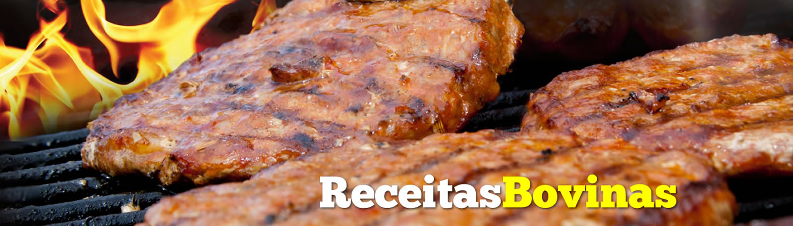
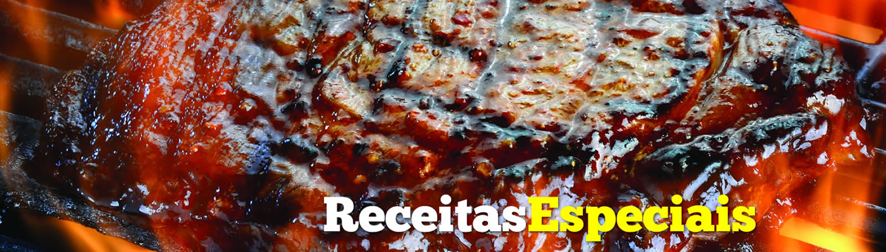
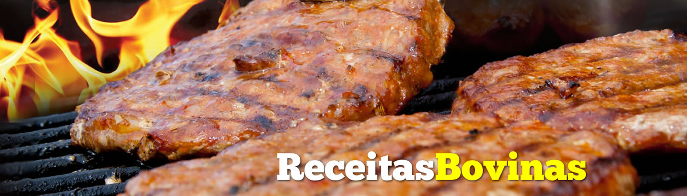
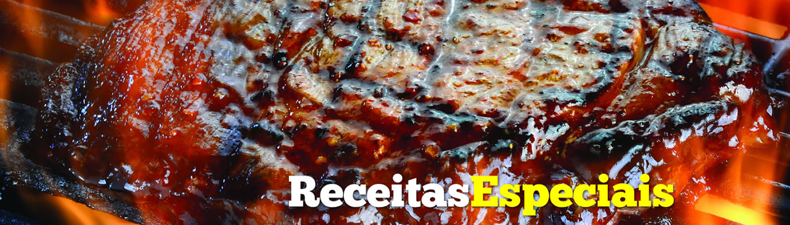

Sobre o Churrasquito

Endereço de Localização:
Av. Fernando Machado, 1000
Chapecó - SC
Bacon ipsum dolor amet frankfurter shoulder tri-tip, beef fatback bresaola biltong. Hamburger jerky brisket pork meatball jowl ham hock. Leberkas shoulder hamburger tail, frankfurter capicola ribeye ham hock meatball. Pastrami tenderloin ham hock cow pork belly picanha pancetta capicola porchetta shoulder kielbasa leberkas corned beef short loin. Prosciutto boudin ham biltong, t-bone turducken kevin hamburger picanha tail pork belly ball tip meatball short ribs.
Capicola tri-tip beef ribs, spare ribs flank kevin meatball ball tip sausage tongue turkey jowl pastrami shoulder sirloin. Alcatra ball tip spare ribs kevin. Tri-tip landjaeger tongue, pork loin pig pork bacon tail pastrami. Pork loin chuck turkey kevin strip steak hamburger. Bresaola cow brisket prosciutto drumstick landjaeger bacon short loin turducken swine alcatra flank biltong jerky. Chicken kielbasa short loin pig shank spare ribs. Cupim short loin meatball pig.